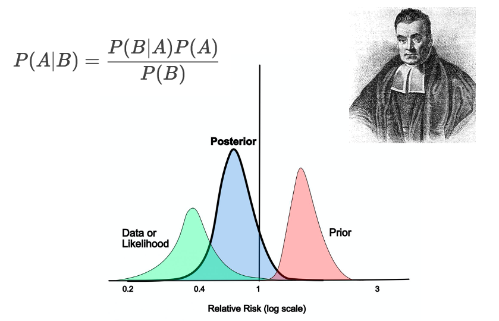

Modeling Naturally Occuring Hierarchies with Bayes
When a simple t-Test won’t do - think bayesian
demo
bayesian
Author
Joey Couse
Published
September 1, 2022

What is a Hierarchical Model?
Hierarchies are pervasive in the natural work and modeling these relationship can yield rich and powerful analysis.
Most students aren’t exposed to the ideas of hierarchical modeling in traditional statistics curriculum. Bayesian hierarchical modeling helps illuminate complex relationships simultaneously without the pitfalls of multiple comparison testing from frequentist methods 1.
Hierarchy is everywhere:
\[
household \rightarrow neighborhood \rightarrow town/city \rightarrow county \rightarrow state
\]
\[
player \rightarrow team \rightarrow division \rightarrow conference \rightarrow league
\]
\[
student \rightarrow class \rightarrow school \rightarrow district
\] Hierarchical models account for chained dependencies within our data, and as a result more appropriately represent our intuitive understanding of these relationships. These dependencies are represented with group-level parameters e.g. a group intercept, and inform lower level parameter estimates.
When we account for hierarchy in our statistical modeling we can answer comprehensive questions about our data without the need for multiple tests. We can directly model all relationships simultaneously and utilize all the available data without aggregation.
Hierarchical models aren’t exclusive to Bayesian statistics 2, though I think Bayesian models provide much richer and intuitive interpretations of model parameters (can someone explain a confidence interval again?).
How to do Hierachical Modeling with R
I’ll demonstrate the benefits of hierarchical modeling using a data set of baseball player’s batting average from the 2022 season publicly available here. I’ll be using a suite of packages known as the tidyverse from the R language.
First I’ll begin by reading in the dataset using the read_csv function.
We have several players with zero at bats, and low sample sizes won’t provide adequate precision especially since batting averages are typically < 0.5. I’m going to arbitrarily filter to include only players with at least 20 at bats for this reason. (Some more in depth analysis could be done to address this issue but is beyond the scope of this blog post).
The “/” symbol is used to denote when a player has played less than 10 games that that position, so I’m going to remove these from the position column.
There is “D” or “H” designation for a designated hitter and pinch-hitters, and since I’m not a baseball expert I’m going to strip those from the positions.
If a player plays multiple positions they have multiple numbers associated with their position e.g. (54, 5 means third baseman; 4 means second baseman). I’m pretty sure they are in listed in the number of games played at that position so I’m going to simplify and only use their most common position.
# Create look-up table of position numbers to position nameposition_numbers <-tribble(~position_number, ~position_name,1, "pitcher",2, "catcher",3, "first_baseman",4, "second_baseman",5, "third_baseman",6, "shortstop",7, "left_fielder",8, "center_fielder",9, "right_fielder")df_clean <- df_raw |>mutate(position =str_remove(position, regex("(?=\\/).*")),position =str_remove(position, regex("[^a-zA-Z0-9]")),position =str_remove_all(position, regex("[HD]")),position =str_sub(position, 1,1 ),position =as.numeric(position))|>filter(!is.na(position), position !=0, at_bats >=20)|>left_join(position_numbers, by =c("position"="position_number")) |>select(-position)head(df_clean, 10) |>gt() |>cols_label(name =md("**Name**"),team =md("**Team**"),at_bats =md("**At Bats**"),hits =md("**Hits**"),position_name =md("**Position**"),name_additional =md("**Name Id**"))
Name
Team
At Bats
Hits
Name Id
Position
José Abreu
CHW
566
148
abreujo02
first_baseman
Ronald Acuna Jr.
ATL
297
84
acunaro01
right_fielder
Willy Adames
TOT
497
130
adamewi01
shortstop
Willy Adames
TBR
132
26
adamewi01
shortstop
Willy Adames
MIL
365
104
adamewi01
shortstop
Riley Adams
TOT
99
22
adamsri03
catcher
Riley Adams
TOR
28
3
adamsri03
catcher
Riley Adams
WSN
71
19
adamsri03
catcher
Jo Adell
LAA
130
32
adelljo01
left_fielder
Ehire Adrianza#
ATL
182
45
adriaeh01
third_baseman
This is looking good! Though, there is the case when a player plays for multiple teams in one season so we’ll aggregate based on based on the player - position pair.